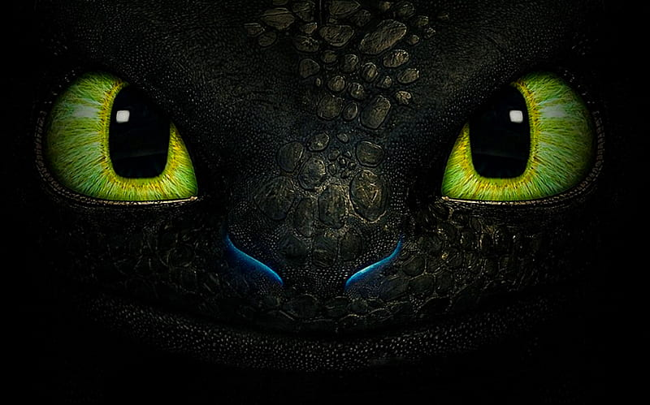

BEHIND THE SCENES
How to Animate a Dragon
by Barbara Robertson
Jun 10, 2014

DreamWorks’ 2010 animated feature How to Train Your Dragon produced glowing reviews and Oscar nominations for Best Animated Feature Film for directors Dean DeBlois and Chris Sanders. This year, DeBlois, the voice cast, and many of the people on the 2010 crew bring us the eagerly awaited How to Train Your Dragon 2, which is already receiving rave reviews from top critics. It’s five years later in the story, as well. The young Viking Hiccup is now 20 years old and he and his dragon Toothless are now partners, friends, accomplished flyers, and intrepid explorers, which leads them to discover Hiccup’s mother, and encounter unexpected danger. How to Train Your Dragon 2 premiered at the Cannes Film Festival May 16 and is scheduled for US release June 13.
Dane Stogner, a former Animation Mentor student who joined DreamWorks Animation to work on Madagascar: Escape 2 Africa, became an expert on Toothless during the first Dragon film. For Dragon 2, he took charge of the hero dragon as Character Lead Animator for Toothless. We talked with Stogner about his experiences animating the friendly yet dangerous Night Fury.
Systems might change from one movie to the next.
“Dragon 2 is the first show to use Premo, DreamWorks’ new animation software system,” Stogner says. “So I had to conceptualize how we could work with Toothless in the new system. I spent the first nine months on the show dividing my time evenly between Premo development, Toothless rig and library development, and animation. I worked with the face and body riggers to develop his face and body rig for the new software. Every way we interacted with the character was new.”
New software can completely change the way animators work.
“We went from using, arguably, one of the most archaic animation software in existence to what I would say is the best in the business,” Stogner says. “It’s a giant leap forward. Premo, the new software, is always live. You can press play and it will play back in realtime with full resolution geometry and a bit of surfacing at any second. There’s no such thing as a playblast. We can adjust curves and poses on the fly, even while it’s playing. It’s unbelievable. I think the developers started from the vantage point of what animators have always wanted and they made it.
“Premo was designed around the idea that animators would have a [Wacom] Cintiq. So, we can just touch and move the character. It is almost like stop motion sometimes. Even on the face. Just push and pull parts of the face around on the surface. We have fully integrated pose libraries, control hierarchies, ghosting, paths, follow cams, and built-in drawing tools with layers like Photoshop. The drawing tools were so easy to use I sometimes did 2D pencil tests in the shot on top of the background rather than shooting reference. It’s exciting.”
Animals provide good reference, even unlikely animals.

“For the first film, we mostly referenced black panthers, house cats and wombats for Toothless’ body language,” Stogner says. “He was very cat-like and stand-offish and mysterious, a scary creature that Hiccup had to befriend. So cats were appropriate. But, two out of three of us Toothless experts, and even Dean DeBlois himself, are greater fans of dogs than cats, and I think there’s legitimacy in the story for having his personality come across more puppy or dog-like in this film. He’s been living with Hiccup for five years. In addition, my favorite pet was my rabbit Waxwick, so I used any opportunity I could to throw in a little rabbit flavor. I’ll definitely try to add more in the next film. There’s a little behavior rabbits do that rabbit fans call binkying where they hop in circles. It’s really cute. They look a little like they’re having a seizure, but they are just happy.